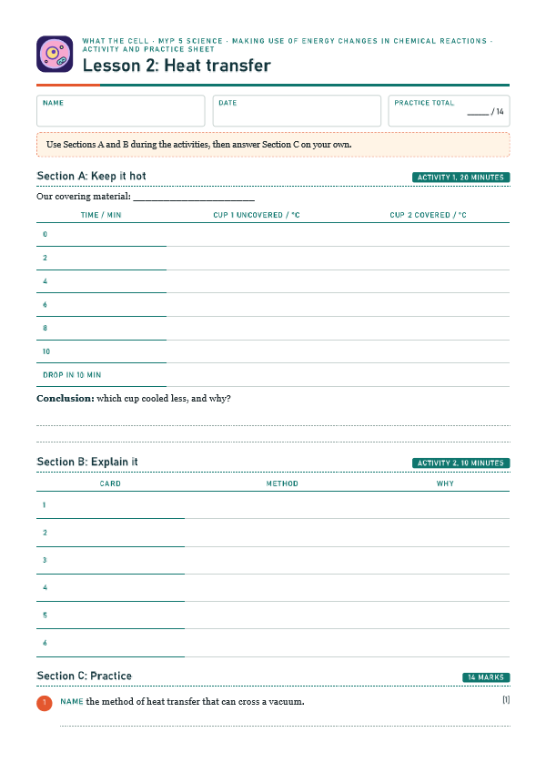

By the end of the lesson you can
- Describe conduction, convection and radiation
- Explain each one using particles or waves
- Explain how insulation reduces heat loss
- Compare insulating materials in a fair test
Keys: arrows or a presentation clicker move the slides, F for full screen. Slides with a red dot have a video or simulation.
Videos (all 5 minutes or less)
- 4:30
Conduction, convection and radiation
Cognito. All three methods of heat transfer, with everyday examples. Slide 8.
Simulations
- PhET
Energy Forms and Changes
PhET, University of Colorado Boulder. Put blocks on burners, turn on energy symbols and watch heat flow into the air and the water.
- Lab
Energy Changes Lab: heat or temperature?
What the Cell. Mix hot and cold water and think about where the missing heat goes in a real cup.
Print and practise

Activity and practice sheet
Used in the lesson’s activities, with practice questions. Your teacher has the answers.
Download (PDF)Lesson 2 slides
All 22 slides in one file, to read again or print. The video buttons on the slides open YouTube.
Download the slides (PDF)Revising? The Revision tab on the unit page has the unit notes and review.
Notes: Heat transfer
Conduction
Heat passes from particle to particle as hot, vibrating particles bump into their neighbours. It works best in solids. Metals are the best conductors because their free electrons carry energy quickly. Wood, plastic, air and wool are insulators.
Convection
In liquids and gases (fluids), heated fluid expands, becomes less dense and rises; cooler, denser fluid sinks to take its place. The loop is a convection current. It cannot happen in a solid.
Radiation
Thermal radiation is infrared waves. It needs no particles, so it crosses empty space. Dark, matt surfaces absorb and emit radiation best; light, shiny surfaces reflect it.
Insulation
Insulators slow heat transfer, usually by trapping air, which is a poor conductor. A lid stops convection and evaporation. Nothing stops heat transfer completely.
The vacuum flask
The vacuum between the walls stops conduction and convection; the silvered walls reflect radiation; the stopper stops convection and evaporation at the top.
A fair test
Change one thing (the covering), measure one thing (the temperature drop) and keep everything else the same: volume of water, starting temperature, cup and time.
Key words
| conduction | heat passing from particle to particle, best in solids and metals |
|---|---|
| convection | heat carried by a moving fluid: hot fluid rises, cool fluid sinks |
| radiation | heat carried by infrared waves; needs no particles |
| insulator | a material that slows heat transfer, often by trapping air |
| density | mass per unit volume; warm fluids are less dense |
| convection current | the loop of rising warm fluid and sinking cool fluid |